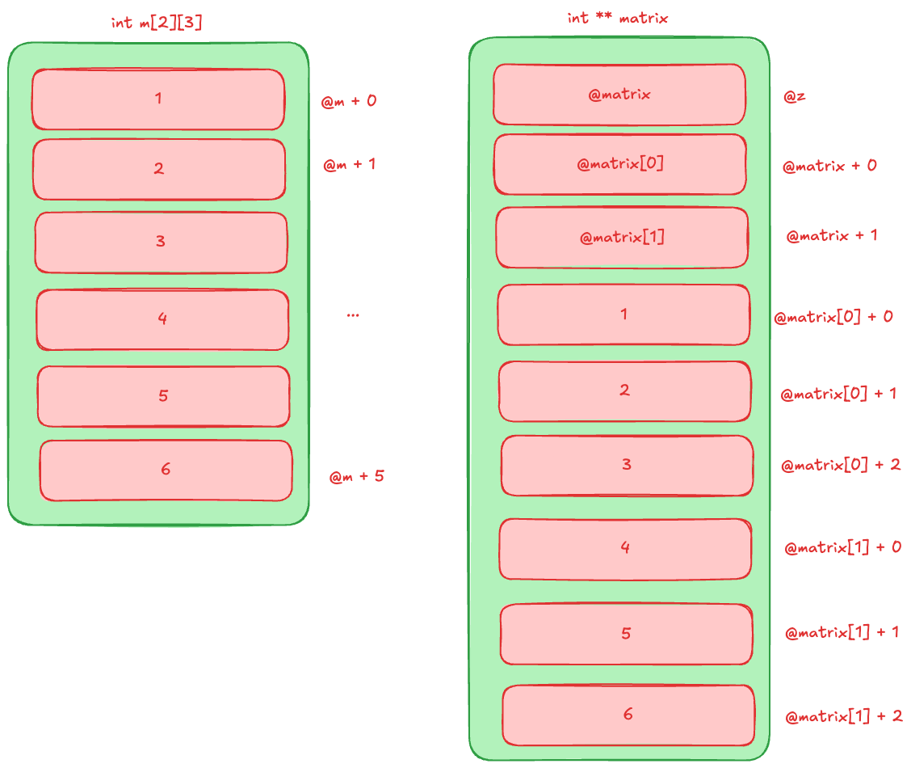

Laboratori 6: Punters, Stack i Heap en C
Objectius
- Com es guarden les dades a la stack i a la heap.
- La diferència entre una matriu estàtica i una matriu dinàmica.
- El paper dels punters en l’assignació de memòria.
- Com explorar la memòria amb GDB.
Codi base per al laboratori
Utilitzarem el següent codi base per al laboratori. Aquest codi crea una matriu estàtica i una dinàmica, i imprimeix els valors i les adreces de memòria corresponents.
#include <stdio.h>
#include <stdlib.h>
int main() {
// Matriu ESTÀTICA: a la pila (stack)
int m[2][3] = { {1, 2, 3}, {4, 5, 6} };
printf("Matriu ESTÀTICA (m):\n");
for (int i = 0; i < 2; i++) {
for (int j = 0; j < 3; j++) {
printf("m[%d][%d] = %d (adreça: %p)\n",
i, j, m[i][j], &m[i][j]);
}
}
// Matriu DINÀMICA: a la memòria heap
int **matrix = malloc(2 * sizeof(int *)); // espai per 2 files
for (int i = 0; i < 2; i++) {
matrix[i] = malloc(3 * sizeof(int)); // espai per 3 enters
}
// Copiem els valors de la matriu estàtica
for (int i = 0; i < 2; i++) {
for (int j = 0; j < 3; j++) {
matrix[i][j] = m[i][j];
}
}
printf("\nMatriu DINÀMICA (matrix):\n");
for (int i = 0; i < 2; i++) {
for (int j = 0; j < 3; j++) {
printf("matrix[%d][%d] = %d (adreça: %p)\n",
i, j, matrix[i][j], &matrix[i][j]);
}
}
// Alliberem la memòria del heap
for (int i = 0; i < 2; i++) {
free(matrix[i]);
}
free(matrix);
return 0;
}Si compileu i executeu aquest codi, veureu que les adreces de la matriu estàtica m estan a la pila (stack), mentre que les adreces de la matriu dinàmica matrix estan a la memòria heap:
gcc -g lab01.c -o lab01
./lab01
Matriu ESTÀTICA (m):
m[0][0] = 1 (adreça: 0xffffde4ce200)
m[0][1] = 2 (adreça: 0xffffde4ce204)
m[0][2] = 3 (adreça: 0xffffde4ce208)
m[1][0] = 4 (adreça: 0xffffde4ce20c)
m[1][1] = 5 (adreça: 0xffffde4ce210)
m[1][2] = 6 (adreça: 0xffffde4ce214)
Matriu DINÀMICA (matrix):
matrix[0][0] = 1 (adreça: 0xaaaae56f96d0)
matrix[0][1] = 2 (adreça: 0xaaaae56f96d4)
matrix[0][2] = 3 (adreça: 0xaaaae56f96d8)
matrix[1][0] = 4 (adreça: 0xaaaae56f96f0)
matrix[1][1] = 5 (adreça: 0xaaaae56f96f4)
matrix[1][2] = 6 (adreça: 0xaaaae56f96f8)Si dibuixem un mapa de la memòria d’aquest programa, molt simplificat, tindríem:

On:
@m: és la base de la matriu estàtica, i com a variable local està al stack. Els seus elements també són al stack utilitzant adreces consecutives.@matrix: és el punter a la matriu dinàmica, i com a variable local també està al stack.@matrix[0],@matrix[1]: són punters que apunten a blocs de memòria al heap, on s’han assignat espai per a les files de la matriu dinàmica.@z: és l’adreça del puntermatrixal stack.
Tasques
Compilar i execució amb GDB
- Compila el codi amb les opcions de depuració:
gcc -g lab01.c -o lab01. - Executa el programa amb GDB:
gdb ./lab01.
Assegura’t de tenir GDB instal·lat al teu sistema. Per instal·lar-lo, pots utilitzar el gestor de paquets del teu sistema (per exemple, su -c "apt-get install gdb -y" a Debian).
Exploració de la memòria amb GDB
Un cop dins GDB, utilitza els següents comandos per a explorar el programa:
break mainper posar un punt d’interrupció al principi de la funciómain.(gdb) break main Breakpoint 1 at 0x860: file lab01.c, line 6.runper iniciar l’execució del programa.(gdb) run Starting program: /home/jordi/c/pointers/lab01 [Thread debugging using libthread_db enabled] Using host libthread_db library "/lib/aarch64-linux-gnu/libthread_db.so.1". Breakpoint 1, main () at lab01.c:6 6 int m[2][3] = { {1, 2, 3}, {4, 5, 6} };Observa que l’execució s’ha aturat a la línia 6, just abans de la declaració de la matriu estàtica
m.Ara posem un altre punt d’interrupció just abans del primer
mallocper a la matriu dinàmica:(gdb) break 17 Breakpoint 2 at 0xaaaaaaaa093c: file lab01.c, line 18.Continuem l’execució fins a aquest punt:
(gdb) c Continuing. Matriu ESTÀTICA (m): m[0][0] = 1 (adreça: 0xfffffffff2a0) m[0][1] = 2 (adreça: 0xfffffffff2a4) m[0][2] = 3 (adreça: 0xfffffffff2a8) m[1][0] = 4 (adreça: 0xfffffffff2ac) m[1][1] = 5 (adreça: 0xfffffffff2b0) m[1][2] = 6 (adreça: 0xfffffffff2b4) Breakpoint 2, main () at lab01.c:17 17 int **matrix = malloc(2 * sizeof(int *)); // espai per 2 filesAra estem just abans de l’assignació de memòria dinàmica. Podem començar a inspeccionar la pila i la memòria heap.
(gdb) info proc mappings
process 1404
Mapped address spaces:
Start Addr End Addr Size Offset Perms objfile
0xaaaaaaaa0000 0xaaaaaaaa1000 0x1000 0x0 r-xp /home/jordi/c/pointers/lab01
0xaaaaaaabf000 0xaaaaaaac0000 0x1000 0xf000 r--p /home/jordi/c/pointers/lab01
0xaaaaaaac0000 0xaaaaaaac1000 0x1000 0x10000 rw-p /home/jordi/c/pointers/lab01
0xaaaaaaac1000 0xaaaaaaae2000 0x21000 0x0 rw-p [heap]
0xfffff7e00000 0xfffff7f8b000 0x18b000 0x0 r-xp /usr/lib/aarch64-linux-gnu/libc.so.6
0xfffff7f8b000 0xfffff7f9c000 0x11000 0x18b000 ---p /usr/lib/aarch64-linux-gnu/libc.so.6
0xfffff7f9c000 0xfffff7fa0000 0x4000 0x18c000 r--p /usr/lib/aarch64-linux-gnu/libc.so.6
0xfffff7fa0000 0xfffff7fa2000 0x2000 0x190000 rw-p /usr/lib/aarch64-linux-gnu/libc.so.6
0xfffff7fa2000 0xfffff7faf000 0xd000 0x0 rw-p
0xfffff7fbe000 0xfffff7fe5000 0x27000 0x0 r-xp /usr/lib/aarch64-linux-gnu/ld-linux-aarch64.so.1
0xfffff7ff7000 0xfffff7ff9000 0x2000 0x0 rw-p
0xfffff7ff9000 0xfffff7ffb000 0x2000 0x0 r--p [vvar]
0xfffff7ffb000 0xfffff7ffc000 0x1000 0x0 r-xp [vdso]
0xfffff7ffc000 0xfffff7ffe000 0x2000 0x2e000 r--p /usr/lib/aarch64-linux-gnu/ld-linux-aarch64.so.1
0xfffff7ffe000 0xfffff8000000 0x2000 0x30000 rw-p /usr/lib/aarch64-linux-gnu/ld-linux-aarch64.so.1
0xfffffffdf000 0x1000000000000 0x21000 0x0 rw-p [stack] En aquest cas, la memòria heap comença a l’adreça 0xaaaaaaac1000 i acaba a 0xaaaaaaae2000 amb una mida de 0x21000 bytes (135168 bytes). La pila d’execució (stack) comença a 0xfffffffdf000 i s’estén fins a 0x1000000000000.
També podem consultar les variables locals amb
info locals.(gdb) info locals m = {{1, 2, 3}, {4, 5, 6}} matrix = 0xaaaaaaaa0854 <main>
Observa que m esta declarada i inicialitzada, mentre que matrix apunta a una adreça de memòria. Aquesta adreça de memòria esta guardada en un altra adreça de memòria (la del punter matrix ,@z). Pots consultar aquesta adreça amb print &matrix.
(gdb) print &matrix
$1 = (int ***) 0xfffffffff2b8
(gdb) print matrix
$2 = (int **) 0xaaaaaaaa0854 <main>Ara anem a consultar la informació sobre la variable
m:(gdb) print &m $1 = (int (*)[2][3]) 0xfffffffff2a0 (gdb) print &m[0] $2 = (int (*)[3]) 0xfffffffff2a0 (gdb) print &m[1] $3 = (int (*)[3]) 0xfffffffff2ac
Observa que l’adreça de m està a la pila d’execució (al voltant de 0xfffffffff2a0). I les adreces de m[0] i m[1] són consecutives (incrementen en 12 bytes, que és la mida d’una fila de 3 enters).
Accedim al primer element de la matriu estàtica amb
print m[0][0].(gdb) print &m[0][0] # Ens imprimeix l'adreça del primer element de la matriu estàtica $2 = (int *) 0xfffffffff2a0 (gdb) print m[0][0] # Ens imprimeix el valor del primer element de la matriu estàtica $3 = 1Accedim al segon element de la matriu estàtica amb
print m[0][1].(gdb) print &m[0][1] # Ens imprimeix l'adreça del segon element de la matriu estàtica $4 = (int *) 0xfffffffff2a4 (gdb) print m[0][1] # Ens imprimeix el valor del segon element de la matriu estàtica $5 = 2Accedim al tercer element de la matriu estàtica amb
print m[0][2].(gdb) print &m[0][2] # Ens imprimeix l'adreça del tercer element de la matriu estàtica $6 = (int *) 0xfffffffff2a8 (gdb) print m[0][2] # Ens imprimeix el valor del tercer element de la matriu estàtica $7 = 3Accedim al primer element de la segona fila de la matriu estàtica amb
print m[1][0].(gdb) print &m[1][0] # Ens imprimeix l'adreça del primer element de la segona fila de la matriu estàtica $8 = (int *) 0xfffffffff2ac (gdb) print m[1][0] # Ens imprimeix el valor del primer element de la segona fila de la matriu estàtica $9 = 4Accedim al segon element de la segona fila de la matriu estàtica amb
print m[1][1].(gdb) print &m[1][1] # Ens imprimeix l'adreça del segon element de la segona fila de la matriu estàtica $10 = (int *) 0xfffffffff2b0 (gdb) print m[1][1] # Ens imprimeix el valor del segon element de la segona fila de la matriu estàtica $11 = 5Accedim al tercer element de la segona fila de la matriu estàtica amb
print m[1][2].(gdb) print &m[1][2] # Ens imprimeix l'adreça del tercer element de la segona fila de la matriu estàtica $12 = (int *) 0xfffffffff2b4 (gdb) print m[1][2] # Ens imprimeix el valor del tercer element de la segona fila de la matriu estàtica $13 = 6Una forma alternativa de veure els valors i les adreces de la matriu estàtica
més utilitzant el comandamentxper examinar la memòria. Aquí,x/6dwindica que volem veure 6 valors (6) en format decimal (d) i com a enters (w), començant des de l’adreça dem[0][0].(gdb) x/6dw &m[0][0] 0xfffffffff2a0: 1 2 3 4 0xfffffffff2b0: 5 6
Observeu que les adreces dels elements de la matriu estàtica són consecutives (incrementen en 4 bytes, que és la mida d’un enter). Podeu confirmar la mida d’un enter al gdb amb:
(gdb) print sizeof(int)
$14 = 4- Ara anem a inspeccionar la variable
matrix, que és un punter a punters per a la matriu dinàmica.
(gdb) print matrix
$6 = (int **) 0xaaaaaaaa0854 <main>
(gdb) print &matrix
$7 = (int ***) 0xfffffffff2b8
(gdb) print &matrix[0]
$8 = (int **) 0xaaaaaaaa0854 <main>
(gdb) print &matrix[1]
$9 = (int **) 0xaaaaaaaa085c <main+8>Observa que l’adreça de matrix també està a la pila d’execució (al voltant de 0xaaaaaaaa0854). I les adreces de matrix[0] i matrix[1] són consecutives (incrementen en 8 bytes, que és la mida d’un punter). Podeu confirmar la mida d’un punter al gdb amb: print sizeof(int*).
Anem a veure l’adreça on apunta
matrix:(gdb) x/6x matrix 0xaaaaaaaa0854 <main>: 0xa9ba7bfd 0x910003fd 0xf9000bf3 0x90000000 0xaaaaaaaa0864 <main+16>: 0x912e6000 0x910083e
El contingut de l’adreça on apunta matrix sembla ser una adreça de memòria (però encara no hem fet el malloc, així que no és vàlida encara).
(gdb) x/6x 0xa9ba7bfd
0xa9ba7bfd: Cannot access memory at address 0xa9ba7bfdAra anem a afegir un altre punt d’interrupció just després del primer
malloc, per veure com canvia la variablematrixdesprés de l’assignació de memòria:(gdb) break 20 Breakpoint 3 at 0xaaaaaaaa0944: file lab01.c, line 20.Continuem l’execució fins a aquest punt:
(gdb) c Continuing. Breakpoint 3, main () at lab01.c:20 20 matrix[i] = malloc(3 * sizeof(int)); // espai per 3 entersAra podem inspeccionar la variable
matrixde nou:(gdb) print matrix $11 = (int **) 0xaaaaaaac16b0 (gdb) x/20x matrix 0xaaaaaaac16b0: 0x00000000 0x00000000 0x00000000 0x00000000 0xaaaaaaac16c0: 0x00000000 0x00000000 0x00020941 0x00000000 0xaaaaaaac16d0: 0x00000000 0x00000000 0x00000000 0x00000000 0xaaaaaaac16e0: 0x00000000 0x00000000 0x00000000 0x00000000 0xaaaaaaac16f0: 0x00000000 0x00000000 0x00000000 0x00000000 (gdb) print &matrix[0] $12 = (int **) 0xaaaaaaac16b0 (gdb) print &matrix[1] $13 = (int **) 0xaaaaaaac16b8 (gdb) x/6x 0xaaaaaaac16b0 0xaaaaaaac16b0: 0x00000000 0x00000000 0x00000000 0x00000000 0xaaaaaaac16c0: 0x00000000 0x00000000 (gdb) x/6x 0xaaaaaaac16b8 0xaaaaaaac16b8: 0x00000000 0x00000000 0x00000000 0x00000000 0xaaaaaaac16c8: 0x00020941 0x00000000El malloc ha assignat memòria per a 2 punters (
matrix[0]imatrix[1]), però encara no hem assignat memòria per a les files de la matriu (això ho fem en el següent buclefor).Si fem
continueuna altra vegada, s’executarà la primera iteració del bucleforque assigna memòria per a la primera fila de la matriu dinàmica.(gdb) x/20x matrix 0xaaaaaaac16b0: 0xaaac16d0 0x0000aaaa 0x00000000 0x00000000 0xaaaaaaac16c0: 0x00000000 0x00000000 0x00000021 0x00000000 0xaaaaaaac16d0: 0x00000000 0x00000000 0x00000000 0x00000000 0xaaaaaaac16e0: 0x00000000 0x00000000 0x00020921 0x00000000 0xaaaaaaac16f0: 0x00000000 0x00000000 0x00000000 0x00000000Ara posem un breakpoint a la línia 31
break 31(alprintfde la matriu dinàmica) i continuem l’execució:continue.(gdb) x/20x matrix 0xaaaaaaac16b0: 0xaaac16d0 0x0000aaaa 0xaaac16f0 0x0000aaaa 0xaaaaaaac16c0: 0x00000000 0x00000000 0x00000021 0x00000000 0xaaaaaaac16d0: 0x00000001 0x00000002 0x00000003 0x00000000 0xaaaaaaac16e0: 0x00000000 0x00000000 0x00000021 0x00000000 0xaaaaaaac16f0: 0x00000004 0x00000005 0x00000006 0x00000000 (gdb) print &matrix[0][0] $12 = (int *) 0xaaaaaaac16d0 (gdb) print &matrix[1][0] $13 = (int *) 0xaaaaaaac16f0Observem que ara
matrix[0]imatrix[1]apunten a adreces vàlides a la memòria heap (0xaaaaaaac16d0i0xaaaaaaac16f0respectivament).Anem veure el contingut de la memòria a partir d’aquestes adreces:
(gdb) x/6x 0xaaaaaaac16d0 0xaaaaaaac16d0: 0x00000001 0x00000002 0x00000003 0x00000000 0xaaaaaaac16e0: 0x00000000 0x00000000 (gdb) x/6x 0xaaaaaaac16f0 0xaaaaaaac16f0: 0x00000004 0x00000005 0x00000006 0x00000000 0xaaaaaaac1700: 0x00000000 0x00000000 (gdb) x/6dw &matrix[0][0] 0xaaaaaaac16d0: 1 2 3 0 0xaaaaaaac16e0: 0 0 (gdb) x/6dw &matrix[1][0] 0xaaaaaaac16f0: 4 5 6 0 0xaaaaaaac1700: 0 0Anem a veure el contingut de la memòria a partir d’aquestes adreces:
(gdb) print matrix[0][0] $14 = 1 (gdb) print matrix[0][1] $15 = 2 (gdb) print matrix[0][2] $16 = 3 (gdb) print matrix[1][0] $17 = 4 (gdb) print matrix[1][1] $18 = 5 (gdb) print matrix[1][2] $19 = 6
En aquest punt, podem veure la mida actual de la memòria heap:
(gdb) print mallinfo()
$15 = {arena = 135168, ordblks = 1, smblks = 0, hblks = 0, hblkhd = 0, usmblks = 0, fsmblks = 0, uordblks = 1792,
fordblks = 133376, keepcost = 133376}Observem que la memòria utilitzada a la heap (uordblks) és de 1792 bytes, que correspon a les dues files de 3 enters cadascuna (2 * 3 * 4 = 24 bytes) més l’overhead del malloc.
- Finalment, posem un breakpoint just abans del
return 0;(línia 38) i continuem l’execució fins a aquest punt:
(gdb) break 38
Breakpoint 4 at 0xaaaaaaaa0968: file lab01.c, line 38.
(gdb) c
Continuing.
Breakpoint 4, main () at lab01.c:38
38 return 0;- Ara podem inspeccionar les variables locals de nou:
(gdb) info locals
m = {{1, 2, 3}, {4, 5, 6}}
matrix = 0xaaaaaaac16b0Ara bé com que hem fet els free de la memòria dinàmica, si mirem la mida de la heap veiem que ha disminuït i que tot i que les adreces matrix[0] i matrix[1] encara són les mateixes, el contingut de la memòria ja no és vàlid:
(gdb) print mallinfo()
(gdb) x/6x 0xaaaaaaac16d0
0xaaaaaaac16d0: 0xaaaaaac1 0x0000000a 0xac976b95 0xe5702979
0xaaaaaaac16e0: 0x00000000 0x00000000
(gdb) x/6x 0xaaaaaaac16f0
0xaaaaaaac16f0: 0x0006bc11 0x0000aaa0 0xac976b95 0xe5702979
0xaaaaaaac1700: 0x00000000 0x00000000